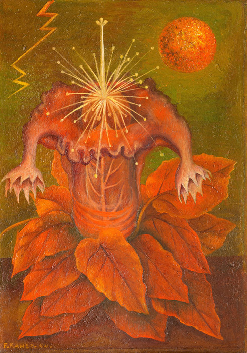

作品名 「生命の花」
花言葉 「恐怖」「幻惑」
マンドラゴラ
「恐怖」
マンドラゴラは古くから、薬草として用いられてきました。魔術や錬金術の原料として登場する物語もあり、根茎がいくつもに分かれて個体によっては人型に似ていて、引き抜くと悲鳴を上げてまともに聞いた人間は発狂して死んでしまうという伝説があります。
生命の花
フリーダ・カーロ
メキシコの女性画家フリーダ・カーロによって1944年に制作された作品です。フリーダにとって、花はセクシュアリティと感情を意味している。マンドラゴラは、その形が男性器を彷彿とさせることから、多産の象徴ととらえられてきた。太陽が命を生み出すように、精子は男根のおしべや膣のような葉から芽を出し、胎児を作り出す子宮を構成している。こうした表現は女性の身体や性に対するタブーを打ち砕いたとして評価されており、夫であり、画家でもあったディエゴ・リベラは「彼女は女性特有の、あるいは女性に普遍的なテーマを、仮借のない率直さと冷徹な厳しさをもって描いた、美術史上最初の女性である」と評している。
| 作品名 | 生命の花 |
| 作者 | フリーダ・カーロ |
| 制作年 | 1944年 |
| 種類 | メゾナイト・油彩 |
| 寸法 | 19.7cm × 27.8cm |
| 所蔵 | ドローレス・オルメド・パティニョ美術館 |